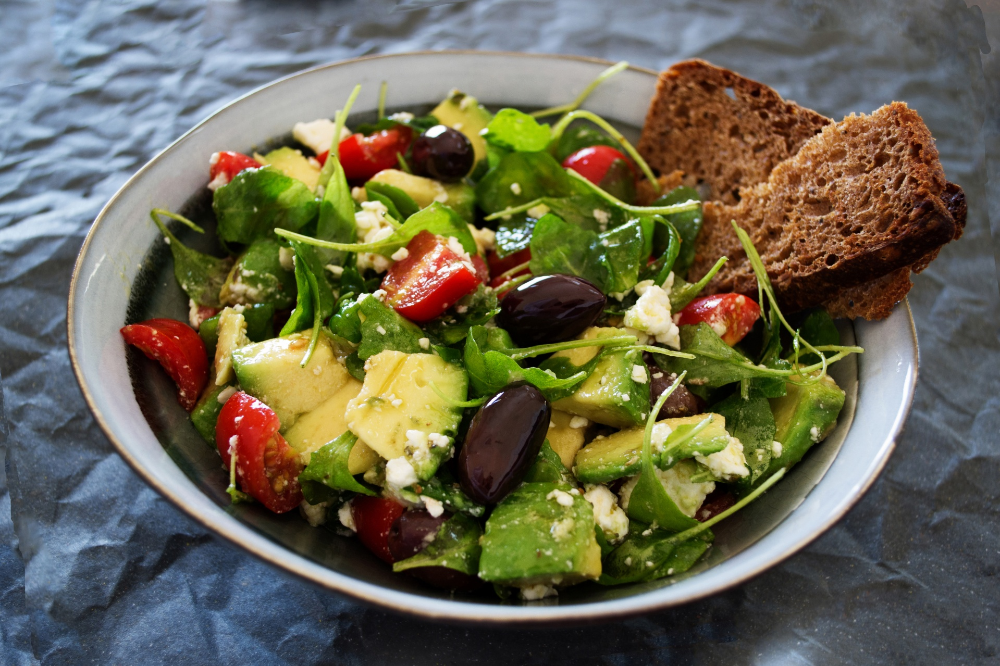

Creamy Goat Cheese Hazlenut Green Bean Salad

Description
Very tasty and filling.
This costs less than 4 dollars per serving depending how hard it is for you to find unsalted premium Hazelnuts.
Takes 5 minutes to make.
This salad has a very fresh and creamy flavor with a hazelnut aftertaste.
Ingredients
- 1/2 ounce of goat cheese
- Juice from a quarter of a big organic lemon
- 2 tbsp of Premium Roasted Hazelnuts chopped. They have to be premium and they have to be unsalted. Really really good nuts don't need salt.
- 1/2 tbsp of minced fresh garlic. Do not get the normal supermarket garlic. Normal supermarket garlic is way too spicy for a salad like this.
- A small slice of red onion chopped
- 10 uncooked green beans chopped. Each green bean is chopped into about 10 pieces.
Instructions
- Mix all ingredients with your hands.
- Do not put in salt and pepper.
Home